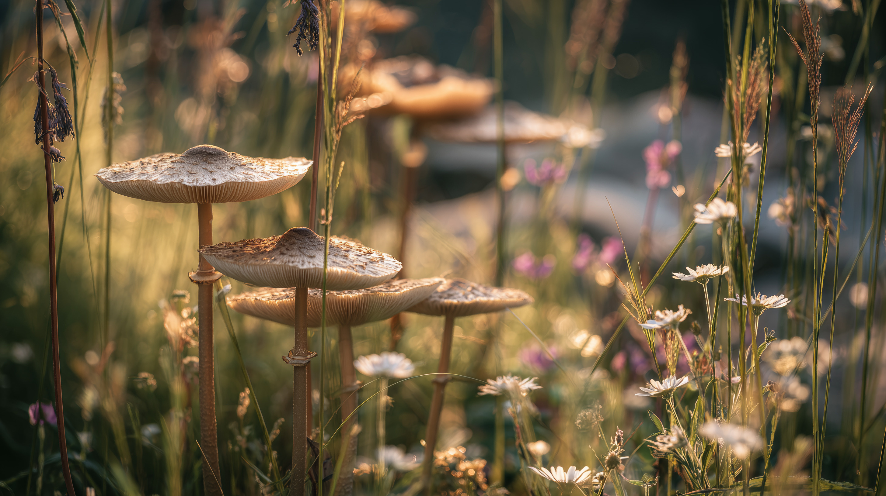
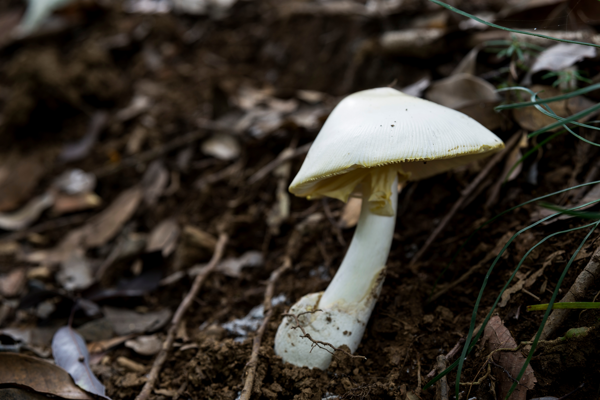

Meadow Mushrooms
Agaricus campestris.
Agaricus campestris, commonly called the field mushroom or meadow mushroom, is a widely eaten wild mushroom that grows in grassy areas, fields, and lawns around the world, especially after rain. It is closely related to the cultivated button mushroom (A. bisporus) and is considered a choice edible for its mild flavor and tender texture. This mushroom is popular among foragers, but it must be carefully identified, as it resembles several poisonous species, including deadly Amanitas and the yellow-staining Agaricus xanthodermus. Field mushrooms usually appear in late summer through autumn and can grow alone, in small groups, or in fairy rings. They have a long history of culinary use and, occasionally, medicinal applications.
The cap is white, 3–12 cm wide, sometimes slightly scaly, and starts hemispherical before flattening with age. The flesh is white, bruises a reddish-brown, and has a mild taste. This mushroom may be confused with toxic Amanita species, please ensure safe identification.

Destorying Angel Mushrooms
Amanita virosa.
Amanita virosa is a highly toxic mushroom in the family Amanitaceae, commonly known as the destroying angel. It is entirely white, with a cap that starts egg-shaped and a stem featuring a ring and a sack-like volva at the base. Its appearance is similar to some edible mushrooms, making it especially dangerous. Found in European and northern Asian woodlands, it forms ectomycorrhizal relationships with trees like beech, chestnut, pine, and fir. A. virosa contains potent amatoxins that can cause severe liver and kidney damage, and even a single cap can be fatal.
Unlike common meadow mushrooms, Amanita virosa is entirely white, with a distinctive ring on the stem and a sack-like volva at its base. Its cap starts egg-shaped and may have ragged patches of veil, and its gills are free from the stem. Meadow mushrooms are usually browner or tan, lack a volva, and are safe to eat, whereas A. virosa is deadly, containing amatoxins that attack the liver and kidneys. Its woodland habitat with trees like beech and pine also sets it apart from the open, grassy habitats of meadow species.